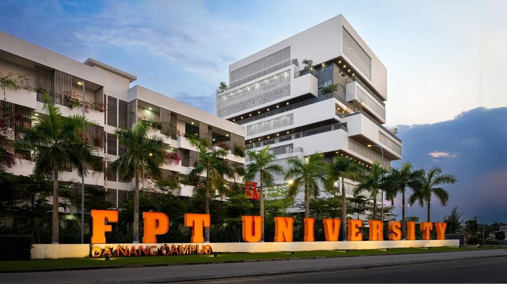

Academic Background
A structured journey covering specialized high school computer science, international study, and higher education in software engineering:
- Higher Education: Undergraduate student majoring in Software Engineering at FPT University Da Nang.
- High School (Grade 12): Toronto Academy of EMC (Toronto, Canada).
- High School (Grades 10 & 11): Specialized in Information Technology at Vo Nguyen Giap Gifted High School.
